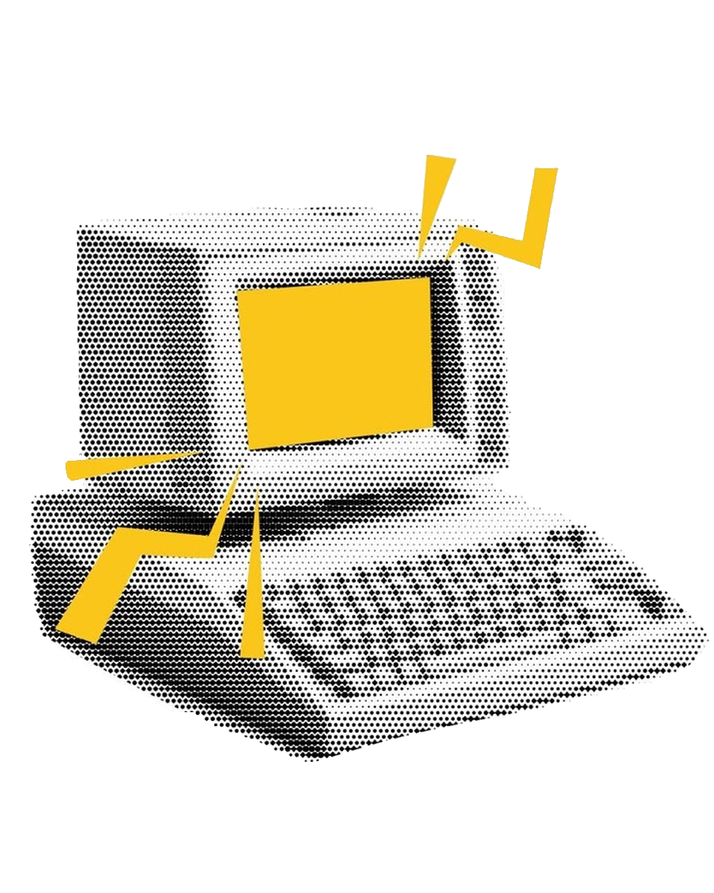
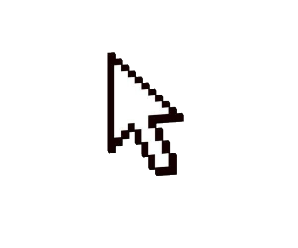

01
canvasApp
Десктоп приложения для связи, планирования, организации и другого
ФуллстекСыктывкар · Россия
Я Антон — разработчик интерфейсов и бэкенда. Помогаю хорошим идеям обрести форму, в которой удобно жить.
Смотреть проекты

Меньше шума. Больше дела.
Последние четыре года я реализую сложные задачи в простые и аккуратные интерфейсы. Мне близка работа, где важно не только «как выглядит», но и «как функционирует».
Ценю прозрачные процессы и сильные вопросы на старте проекта. Верю, что глубокое понимание задачи важнее сотен строк кода.
Погружаюсь в технические детали, не теряя из виду общую архитектуру проекта.
Дизайн-системы · адаптивная вёрстка · доступность
ООП · чистая архитектура · бизнес-логика
Проектирование БД · оптимизация запросов · миграции данных
Прототипирование · обратная связь · документация
Несколько историй о том, как устроенная работа помогает людям.
Десктоп приложения для связи, планирования, организации и другого
Телеграмм бот созданный для изучения английского языка путем игры с карточками
Сайт для онлайн школы английского языка
Есть задача, которую стоит обсудить?